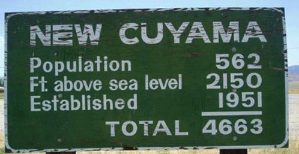

The intersection between Via Alessandro Magno and Via Timante is the one you do not want to miss when you are driving around Casal Palocco, the neighborhood where Goffredo grew up, in Rome. It is a sensible spot because Via Timante is the shortcut to access easily the Via Cristoforo Colombo, the highway-like fast road connecting Rome to the sea front of Ostia. Houses in Casal Palocco are remarkably similar to each other and if you do not already know the area, you miss this exit and you will get lost. Hence an arrow and a clear sign saying “ostia” or “via cristoforo colombo” would have been appropriate at the crossroad. For unknown reasons, the authority decided differently and positioned a sign that inform the viewer that - and we quote verbatim: “Maintenance of this road and sidewalks is Rome Municipality’s sole responsibility”.
Some graffiti writers thought that sign was not a big deal and gratified it with some color and tags.
The costly procedure needed to conceive, produce and place this sign tells a lot about design for public spaces. At least in New Cuyama, California, they set this up with the purpose of being funny!
